Part 0 — Camera Calibration and Capturing a 3D Scan
Part 0.1 — Calibrating Your Camera
I captured ~50 images of ArUco calibration tags using my phone camera and kept the zoom consistent while varying the angle and distance of the camera.
I implemented a calibration script that loops through all captured images, detects ArUco tags using OpenCV's ArUco detector, and extracts corner coordinates. Each tag corner has a corresponding 3D world coordinate (treating the tag as lying flat on the z=0 plane). After collecting all detected corners across all images, I used cv2.calibrateCamera() to compute the camera intrinsics matrix K and distortion coefficients.
Calibration Results:
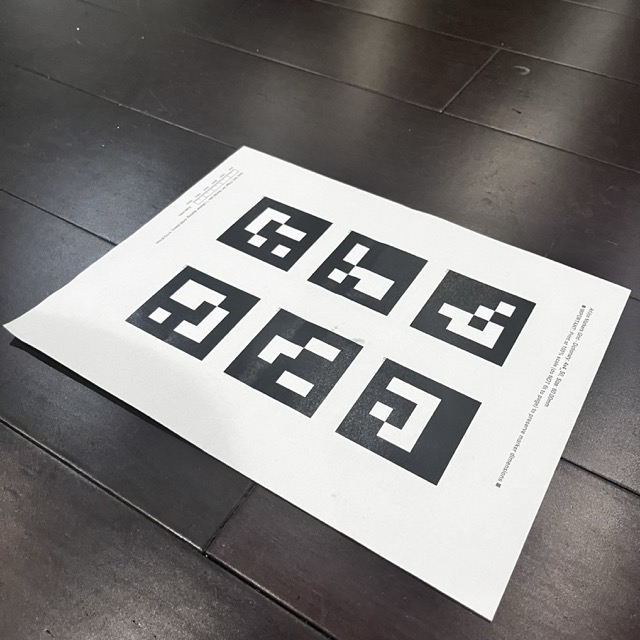
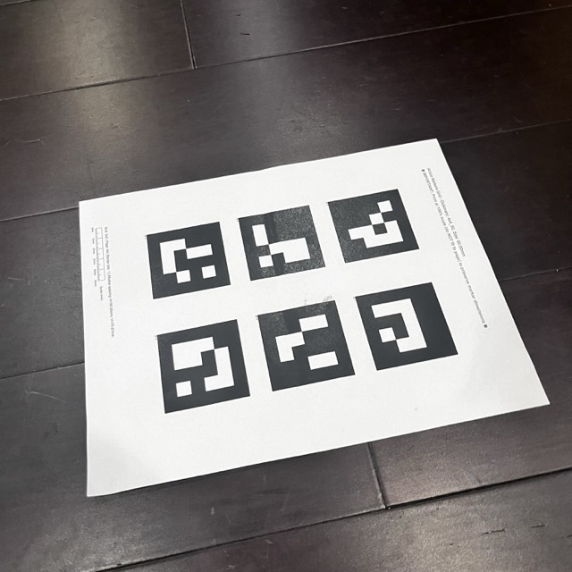
Sample calibration image with detected ArUco tags
The calibration process successfully computed camera params with an RMS error of approximately 0.23, which is pretty decent.
Part 0.2 — Capturing a 3D Object Scan
I captured ~50 images of the Amusable Geek Egg from different angles with 1 ArUco tag using the same camera and zoom for the calibration earlier. I tried to make the tag as big as possible without cropping the egg out(i think this helps a lot as ive tried using multiple other objects for my dataset, but they were kinda big and i couldnt capture the entire object without standing further away -> the tag appears very small in the photos and the model didnt work well for these datasets).
Object Images:
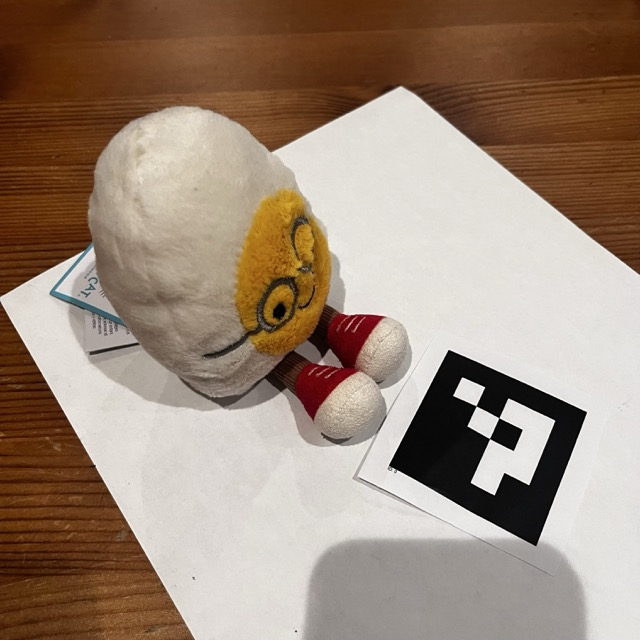
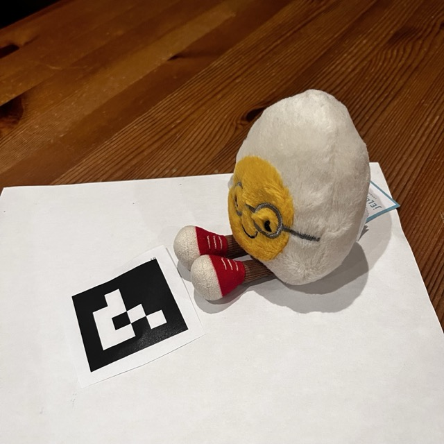
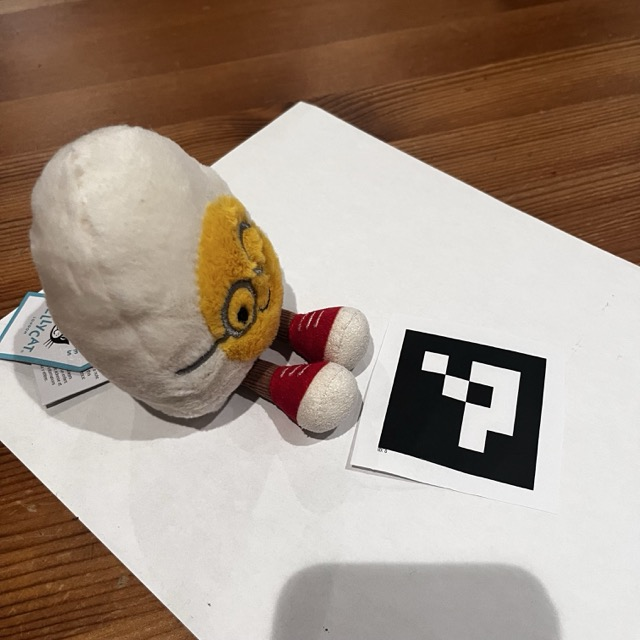
Sample views of the amusable geek egg from different angles
Part 0.3 — Estimating Camera Pose
Using the calibrated camera params I estimated the camera pose for each image of my object. For each image, I detected the single ArUco tag and used cv2.solvePnP() which gives us the rotation and translation of the camera relative to the tag.
The solvePnP function returns the world-to-camera transformation. Since NeRF requires camera-to-world (c2w) transformations, I inverted this to get the proper extrinsic matrix.
Camera Frustums Visualisation:
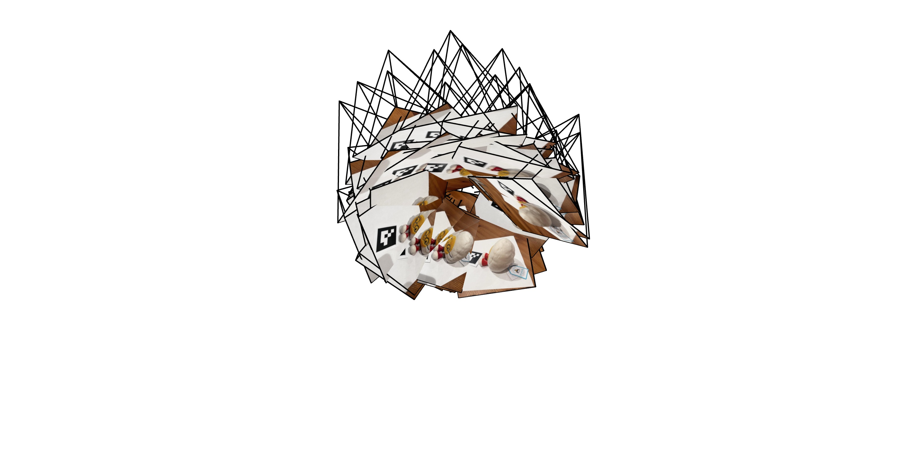
3D visualization of camera poses using Viser - View 1
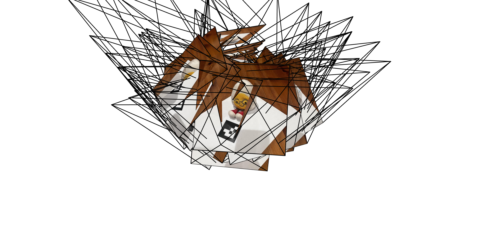
3D visualization of camera poses using Viser - View 2
Part 0.4 — Undistorting Images and Creating Dataset
The final step was to undistort all captured images(using cv2.undistort()) to remove lens distortion and put them into a dataset for NeRF training.
I also used cv2.getOptimalNewCameraMatrix() to compute a new camera matrix that crops out the black borders after distortion. The function returns both a new intrinsics matrix and a valid pixel ROI. After cropping, I updated the principal point in the intrinsics matrix to account for the crop offset.
I split the images into training (80%), validation (10%), and test (10%) sets. The final dataset was saved as a .npz file containing the following as given by the sample code:
images_train: Training images (N_train, H, W, 3)
c2ws_train: Camera poses for training (N_train, 4, 4)
images_val: Validation images (N_val, H, W, 3)
c2ws_val: Camera poses for validation (N_val, 4, 4)
c2ws_test: Test camera poses for novel view rendering (N_test, 4, 4)
focal: Focal length from camera intrinsics
Part 1 — Fit a Neural Field to a 2D Image
Implementation Overview
In this part I implemented a neural field that can represent a 2D image by learning to map pixel coordinates to RGB colors.
Network Architecture
I created a Multilayer Perceptron (MLP) with the following components:
Sinusoidal Positional Encoding: Applied to the input 2D coordinates to expand dimensionality. With L=10, a 2D coordinate is mapped to a 42-dimensional vector using sin and cos functions at different frequencies.
MLP Structure: 4 layers with 256 units each, using ReLU activations between layers
Output Layer: Sigmoid activation to constrain RGB values to [0, 1]
Training Details
I implemented a dataloader that randomly samples 10,000 pixels per iteration to fit within GPU memory constraints. Both coordinates and colors were normalized to [0, 1]. The network was trained using:
Loss Function: Mean Squared Error (MSE) between predicted and ground truth colors
Optimizer: Adam with learning rate of 1e-2
Iterations: 2000 training steps
Metric: PSNR computed as 10 × log₁₀(1/MSE)
Training Results on Fox Image
Training Progression:
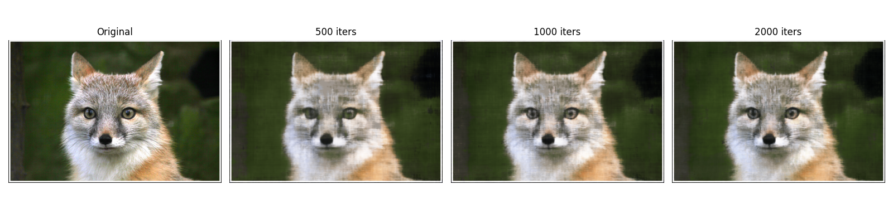
Fox image reconstruction at 0, 500, 1000, and 2000 iterations
PSNR Curve:
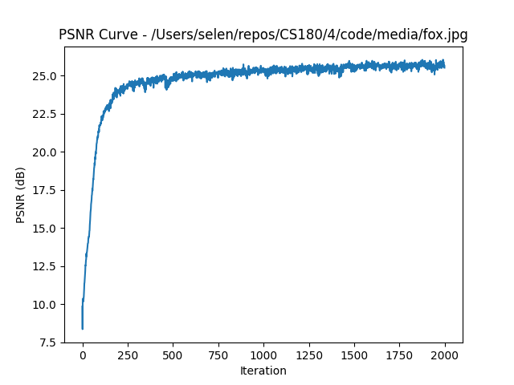
Training Results on Custom Image
Training Progression:
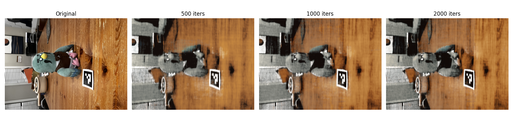
Custom image reconstruction at 0, 500, 1000, and 2000 iterations
PSNR Curve:
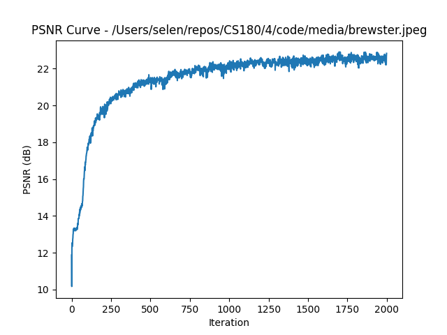
PSNR improvement over training iterations for the custom image
Hyperparameter Exploration
I experimented with different combinations of positional encoding frequency (L) and network width to understand their impact on reconstruction quality.
Hyperparameter Grid (2×2):
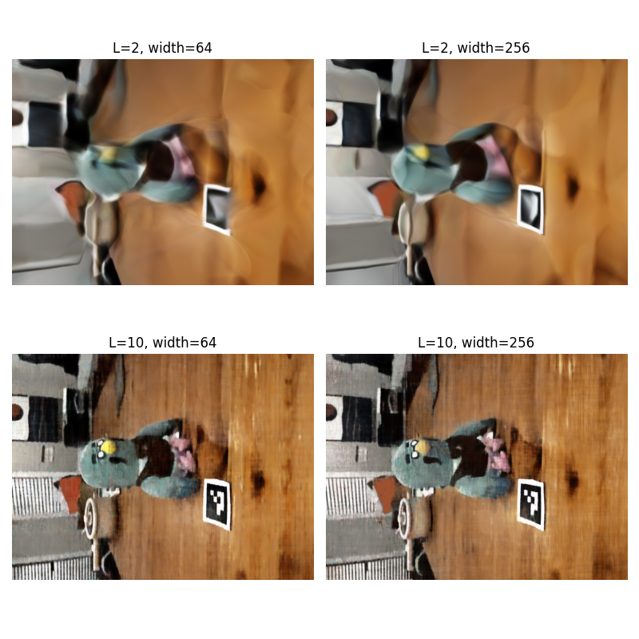
Results with different L and width combinations: (L=2, width=64), (L=2, width=256), (L=10, width=64), (L=10, width=256)
Observations:
Low L: blurry results because the network lacks high-frequency components needed to capture fine details
High L: image is much sharper
Small width: limited capacity leads to loss of details and lower overall quality
Large width: better capacity to learn complex details
Best combination: L=10 with width=256 produces the sharpest and most accurate reconstruction
Part 2 — Fit a Neural Radiance Field from Multi-view Images
Part 2.1 — Creating Rays from Cameras
To train a NeRF, I needed to convert pixel coordinates into rays in 3D space. This involves several coordinate transformations:
Camera to World Transformation
I implemented a function to transform points from camera space to world space using the camera-to-world (c2w) matrix. The c2w matrix is the inverse of the world-to-camera (extrinsic) matrix, and it describes both the camera's orientation (rotation) and position (translation) in world coordinates.
Pixel to Camera Transformation
Given the camera intrinsics matrix K (containing focal length and principal point), I implemented a function to convert pixel coordinates back to camera space. This inverts the pinhole camera projection by:
x_camera = (u - cx) * depth / fx
y_camera = (v - cy) * depth / fy
z_camera = depth
Pixel to Ray Conversion
For each pixel, I computed a ray with:
Ray origin: The camera center in world space (translation component of c2w matrix)
Ray direction: Computed by finding a point along the ray at depth=1 in world space, then normalizing the direction vector from the origin to that point
Part 2.2 — Sampling Points Along Rays
After generating rays, I needed to sample 3D points along each ray for the network to evaluate. I implemented stratified sampling with perturbation:
Sampling Strategy:
Uniform intervals: Divide the ray segment [near, far] into N equally spaced intervals (I used 64 samples)
Random perturbation: Add random offsets within each interval during training to avoid overfitting to fixed sample locations
Scene bounds: For the Lego dataset, I used near=2.0 and far=6.0 based on the scene's depth range
The 3D coordinates are computed as: x = ray_origin + ray_direction × t, where t represents the sample distances along the ray.
Part 2.3 — Dataloader and Visualization
I implemented a dataloader that randomly samples rays from all training images. For each ray, the dataloader returns:
Ray origin: 3D camera center
Ray direction: Normalized 3D direction vector
Ground truth color: RGB values from the image
Visualization of Rays and Samples:
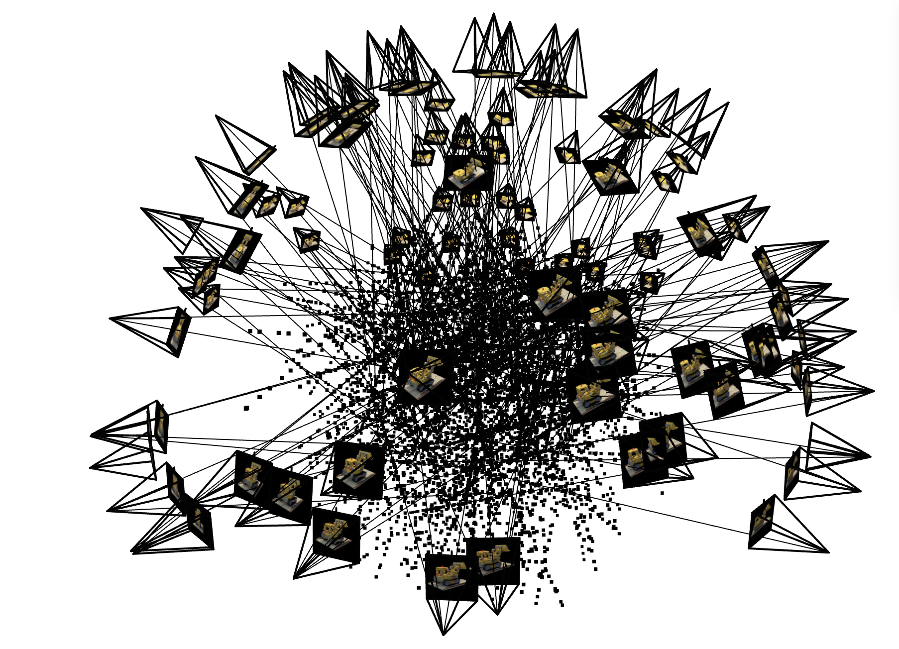
Visualization of cameras (frustums), sampled rays (lines), and 3D sample points along rays
Part 2.4 — Neural Radiance Field Architecture
Network Structure:
Input: 3D position coordinates (with L=10 positional encoding) and 3D viewing direction (with L=4 positional encoding)
Architecture: 8 hidden layers with 256 units each, using ReLU activations
Skip connection: The input is concatenated at the middle layer (after layer 4) to help the network retain position information
Output: RGB color (3 values with Sigmoid activation) and density σ (1 value with ReLU activation to ensure non-negative)
Part 2.5 — Volume Rendering
Volume rendering composites the color and density predictions along each ray into a final pixel color. I implemented the discrete volume rendering equation:
The transmittance Tᵢ represents the probability that a ray reaches sample i without being absorbed. The alpha value represents the probability of the ray terminating at sample i. Together, they weight each sample's color contribution to the final pixel.
Implementation Details:
I used PyTorch operations (torch.cumsum and torch.exp) to compute transmittance values across all samples in a batched manner. The implementation correctly handles gradients so the loss can backpropagate through the volume rendering process during training.
Training Results on Lego Dataset
Training Progression:
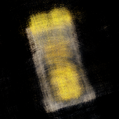
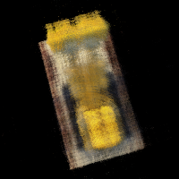
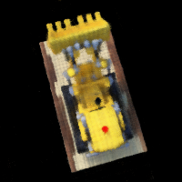
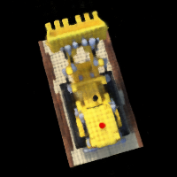
Novel view rendering of Lego at 400, 1000, 5000, and 10000 iterations
PSNR Curve on Validation Set:
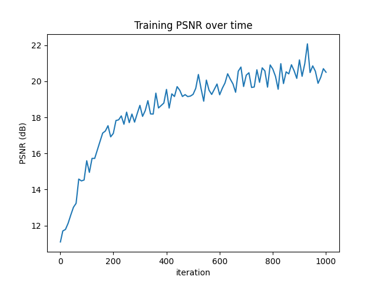
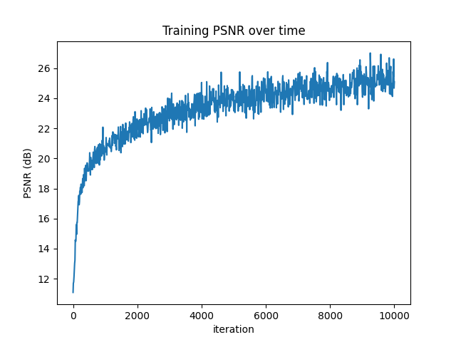
PSNR on validation set over training iterations (1k vs 10k)
Training Details:
Batch size: 1024 rays per gradient step
Samples per ray: 64
Optimizer: Adam with learning rate of 5e-4
Iterations: 1000/10000
Novel View Rendering Video:
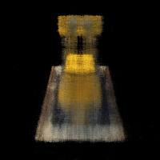
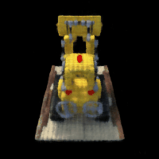
360° spherical rendering of the Lego (1k vs 10k iters)
Part 2.6 — Training on Custom Dataset
After successfully training on the Lego dataset, I trained a NeRF on my own captured object from Part 0. This required several adjustments compared to the Lego training:
Parameter Adjustments:
Near and far planes: The Lego dataset used near=2.0 and far=6.0. For my custom data, I adjusted these to near=0.02 and far=0.5 based on the actual distances in my captured scene and a few rounds of trial and error.
Image resolution and dimensions: I resized images to a lower resolution to keep training time reasonable, updating the intrinsics matrix accordingly.
Samples per ray: Initially started with 32 samples for faster debugging, then increased to 64 for the final training to improve quality.
Learning rate: Experimented with values between 1e-4 and 5e-4 to find the optimal training speed, and implemented learning rate decay.
Training Progression:
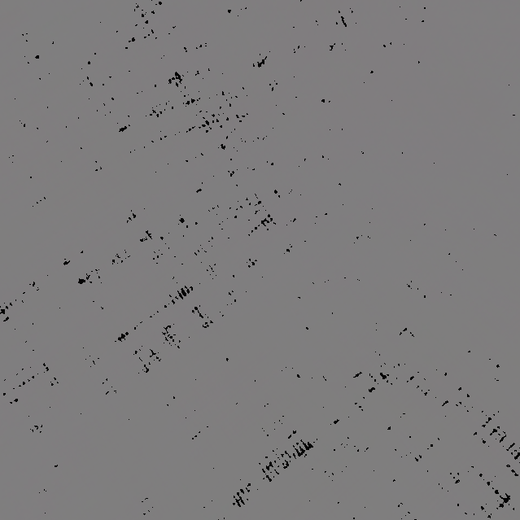
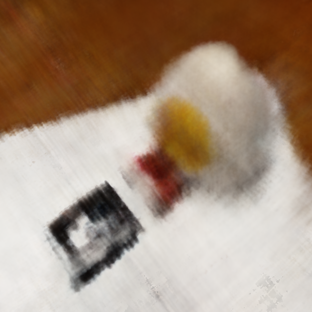
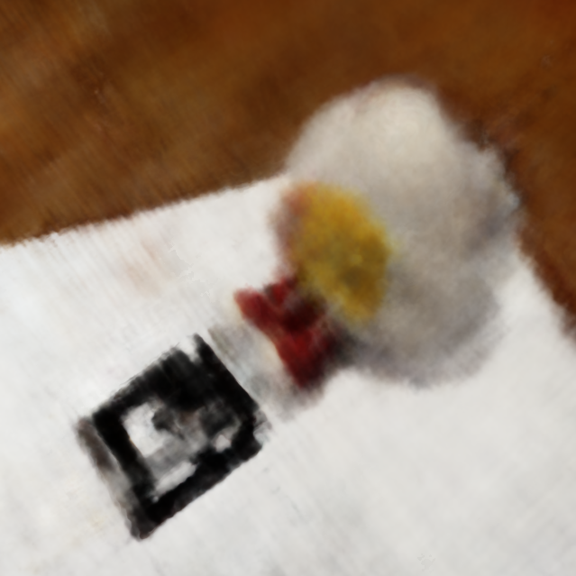
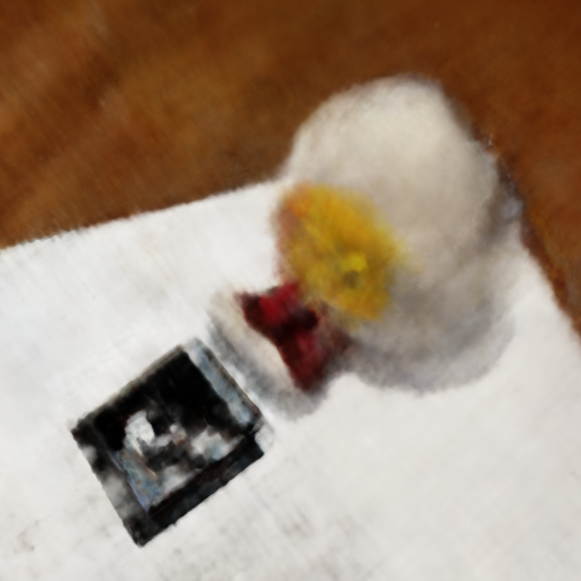
Novel view rendering of custom object at 1, 2000, 5000, and 10000 iterations
Training Loss Curve:
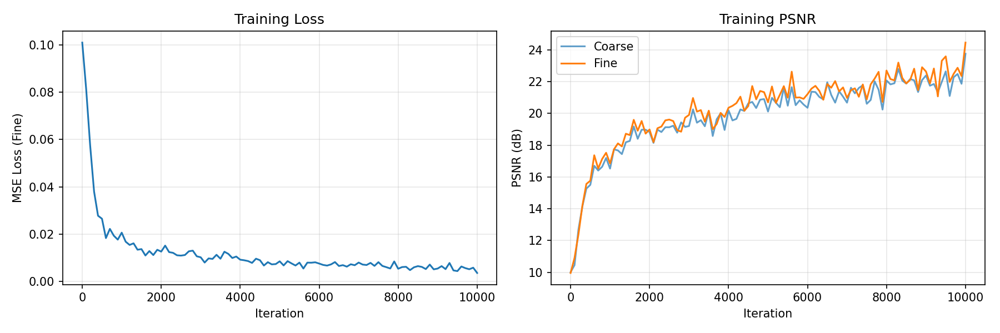
Training loss over iterations for custom dataset
Novel View Rendering:
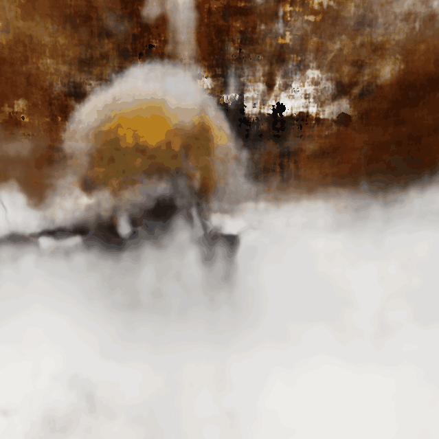
360° rendering of my custom captured object from novel viewpoints
After tuning the parameters and training for sufficient iterations, the NeRF successfully reconstructed my custom object. The novel view synthesis shows good geometric consistency, though some fine details are smoother than in the training views due to the relatively limited number of input images.
Comparison: Lego vs Custom Data:
Training on real-world data was more challenging than the synthetic Lego dataset due to factors like changes in lighting, low contrast, time consuming to manually build the datasets and uneven camera pose distributions(since taking the photo from certains angles may cover the ArUco tag). I have to experiment with the parameters multiple times to determine the one that works the best, and also improve the model architecture.
Key Improvements from Lego Model(Bells and Whistles):
1. I added hierarchical sampling with a coarse to fine strategy, which is a core contribution from the original NeRF paper. This involves training two separate networks(a coarse network that samples points uniformly along rays, and a fine network that uses importance sampling). This dramatically improved rendering quality.
2. I also implemented improved weight initialization using Kaiming/He initialization along with a positive bias in the density layer to encourage the network to predict non-empty space early in training, helping avoid local minima.
3. I added a learning rate scheduler with warmup (starting with a 1000-iteration warmup phase followed by exponential decay), which stabilized training on real-world data that has more noise.
4. I incorporated gradient clipping to prevent exploding gradients, which was kinda important given the deeper network architecture and hierarchical sampling.